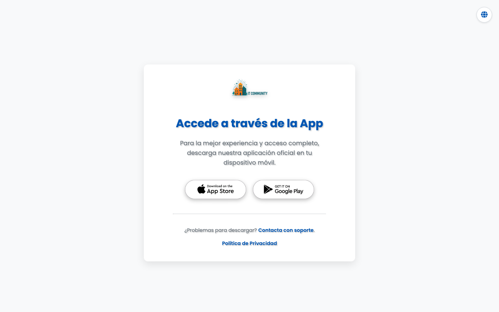

Download
Juntas.dmg — sempre l'ultima versione
Android e iOS — dagli store o tramite it-community.online
Installer disponibile in ogni release
Che cos'è
Juntas è l'app delle assemblee dell'ecosistema IT-Community: si collega al portale della tua comunità di proprietari per ricevere convocazioni, consultare i documenti di ogni riunione e seguire la vita della comunità da qualsiasi dispositivo. Questo repository distribuisce i binari pubblici e i feed di auto-aggiornamento.

Funzionalità
Connessione al portale — l'app si collega al portale IT-Community della tua comunità tramite la directory
portals.json.Multi-piattaforma — build per Android, iOS, Windows e macOS.
Auto-aggiornamento —
version.json e appcast.xml alimentano l'updater integrato.Documenti delle assemblee — convocazioni, verbali e allegati del portale, su mobile e desktop.
Come si usa
- 1Scarica la build per la tua piattaforma dall'ultima release (o installa l'app mobile dal tuo store).
- 2Apri l'app e trova la tua comunità nella directory dei portali.
- 3Accedi con le credenziali fornite dal tuo amministratore di condominio.
- 4Consulta convocazioni, verbali e documenti di ogni assemblea dall'app.
Requisiti
Android, iOS, Windows 10+ o macOS recente · Richiede un portale IT-Community attivo per la tua comunità (gestito dall'amministratore).
Cosa contiene questo repository
Juntas-<versione>.dmg— installer macOS firmatoJuntas-<versione>.zip— build impacchettata / archivio di auto-updateversion.json— feed di versione per l'updater dell'appappcast.xml— feed Sparkle per macOSportals.json— directory dei portali IT-Community usata dall'app- Il codice sorgente vive nel repo privato
mavksoft/juntas-it-community.
Domande frequenti
Posso usare l'app se la mia comunità non ha un portale?
L'app richiede un portale IT-Community attivo — configurato dall'amministratore della tua comunità.
Dov'è il codice sorgente?
Software privato: questo repository pubblica solo binari e feed di aggiornamento.
Assistenza
- Sito: it-community.online
- Email: hola@it-community.online